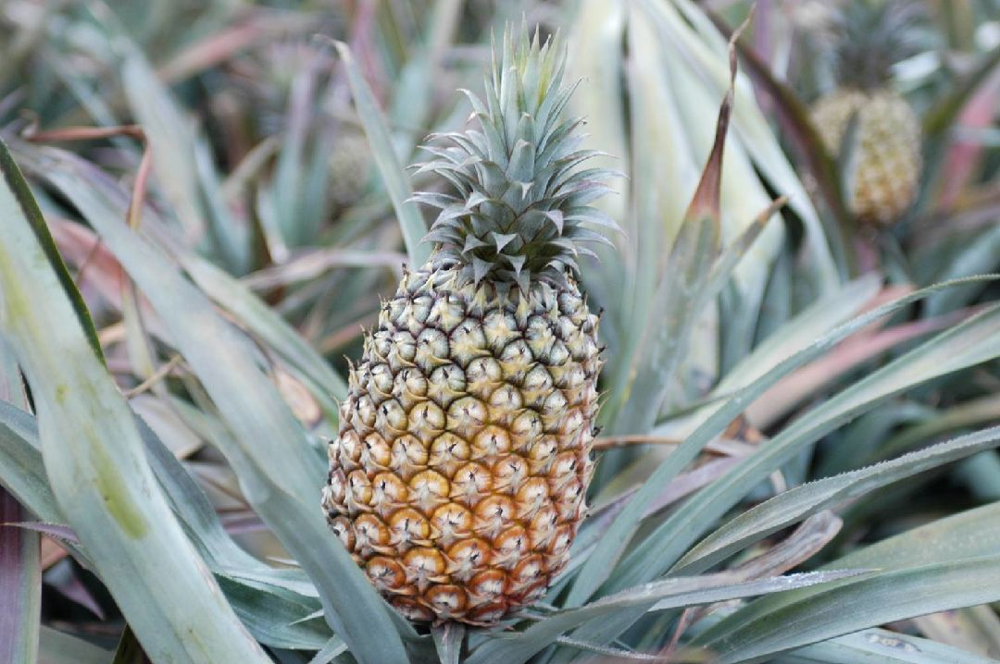
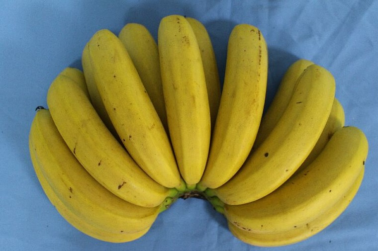

臺灣水果專業圖鑑
臺北農產運銷公司內部培訓自主學習資料 — 收錄臺灣主要果物品種分類、產地分布、市場行情與栽培要點
火龍果芒果荔枝鳳梨香蕉芭樂龍眼梨柑橘百香果棗子⋯ 續
臺北農產運銷公司內部培訓自主學習資料 — 收錄臺灣主要果物品種分類、產地分布、市場行情與栽培要點





以單一產季年度對照 11 類水果的供應與盛產時序，深色區段為盛產高峰。點選各圖鑑可查看品種級產期甘特圖。
本表為各圖鑑主要供應期的彙整。深色為盛產高峰，實際供果受產地緯度、海拔、氣候與產期調節技術影響，各圖鑑頁內有品種級甘特圖。
更多品種 — 陸續擴充
葡萄、釋迦⋯